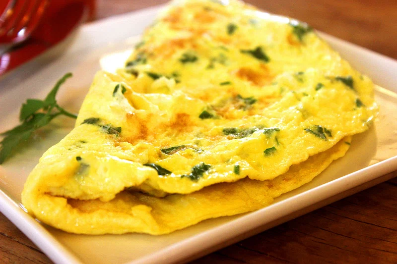

Omelets

Description
Omelets are a very filling item on many
different culture's palettes. High in protein,
these golden semicircles will brighten your morning.
Ingredients
- 2 tablespoons olive oil
- 3 large eggs, beaten
- 1 tablespoon crumbled goat cheese
- 2 tablespoons chopped chives
- Sea salt and ground black pepper
Steps
-
Heat olive oil in a large skillet over medium
heat, swiriling oil to coat skillet. Pour
beaten eggs into hot skillet and cook until
eggs bubble and begin to firm up.
-
Lift the cooked edges of omelet with a rubber
spatula and tilt the skillet so any uncooked
egg runs underneath the lifted edge. Continue
cooking, lifting the edges and tilting the
skillet, until omelet is almost completely
set, 1 to 2 minutes. Remove the skillet from
heat. Spread any runny eggs evenly over the
top of omelet using the spatula.
-
Sprinkle goat cheese, 1 ½ teaspoons chives, sea
salt, and black pepper over omelet. Gently
lift one edge and fold ⅓ of the omelet into
the center. Slide omelet to the edge of the
skillet and flip, folded-side down, onto a
plate.
-
Top the omelet with the remaining ½ teaspoon
chives to serve.